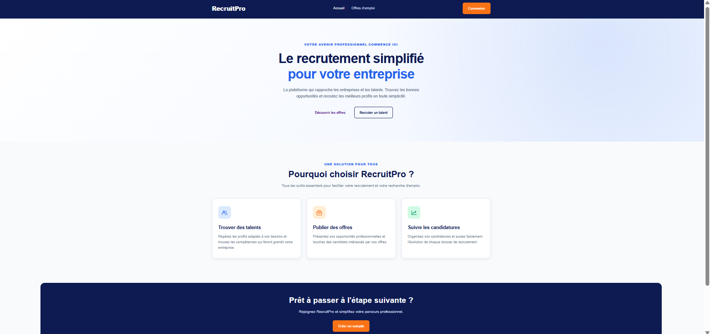

RecruitPro
Application web de recrutement conçue pour faciliter la mise en relation entre les entreprises et les candidats.
Fonctionnalités réalisées
- Page d'accueil de la plateforme
- Présentation des offres d'emploi
- Connexion à une base MySQL
- Enregistrement et affichage des offres
- Formulaire d'inscription utilisateur
Technologies utilisées
HTML
CSS
JavaScript
PHP
MySQL
🚧 Projet personnel en cours de développement
Voir le projet ↗
Bientôt disponible
Voir le code ↗
Bientôt disponible